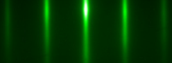
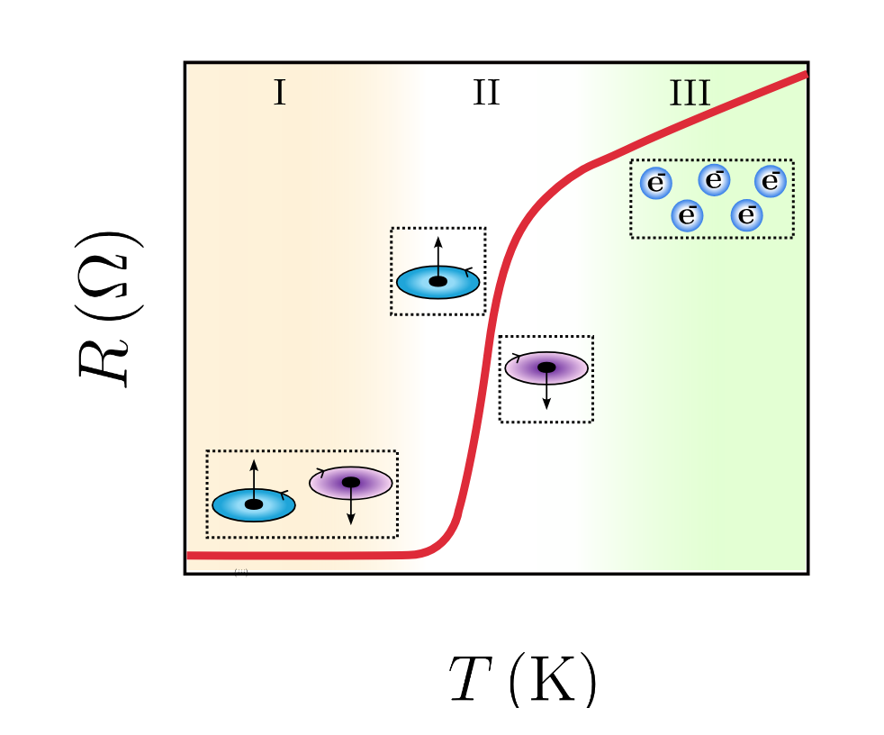
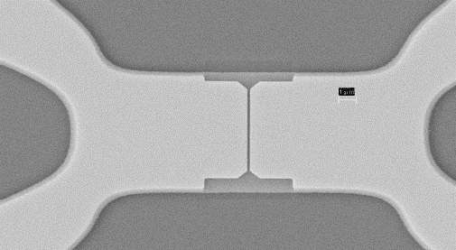
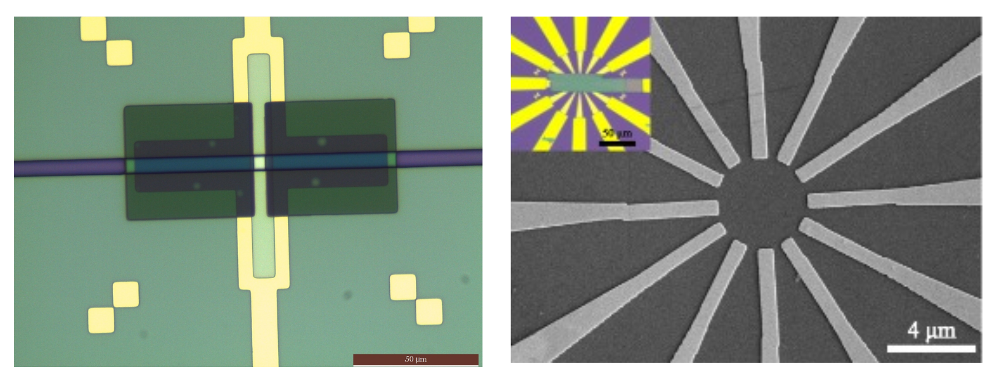

Research
We study the physics of epitaxial materials and interfaces of the following class of materials.

Three-dimensional topological insulators possess an insulating bulk while supporting conducting surface states protected by topology.
We synthesize these materials using molecular beam epitaxy (MBE) and engineer their structural and electronic properties to realize novel electronic and thermal states.

Superconductors are materials that exhibit zero electrical resistance and perfect diamagnetism below a critical transition temperature. In this regime, electrons form coherent quantum states that can support dissipationless transport and macroscopic phase coherence.
Our work focuses on fabricating micro- and nano-scale superconducting devices and studying how their quantum states evolve under controlled electrical gating and applied magnetic fields. By engineering device geometry and interfaces, we explore phenomena such as quantum interference, phase control, and field-tunable superconducting states, with the goal of understanding and manipulating superconductivity at the nanoscale.

A powerful way to engineer material properties is through proximity coupling. By interfacing dissimilar materials, entirely new physical phenomena can emerge.
We investigate hybrids involving superconductors, magnetic materials, and topological insulators. For example, triplet superconductivity enables the coexistence of superconductivity and ferromagnetism, while magnetization can tune the surface states of TI/magnetic insulator hybrids.
Our studies focus on the electronic properties of nano-devices fabricated from these hybrid material systems.

Our device-based research focuses on mesoscopic and nanoscale superconducting structures, with particular emphasis on Josephson junctions and their applications. By tailoring junction geometry and material composition, we explore quantum transport phenomena and superconducting phase coherence at the nanoscale, and at temperatures close to 50 K.
In parallel, we develop highly sensitive devices for the detection of ultra-low magnetic fields. These systems provide powerful platforms for probing weak magnetic signals and studying fundamental physical processes, as well as for potential applications in sensing and quantum technologies.